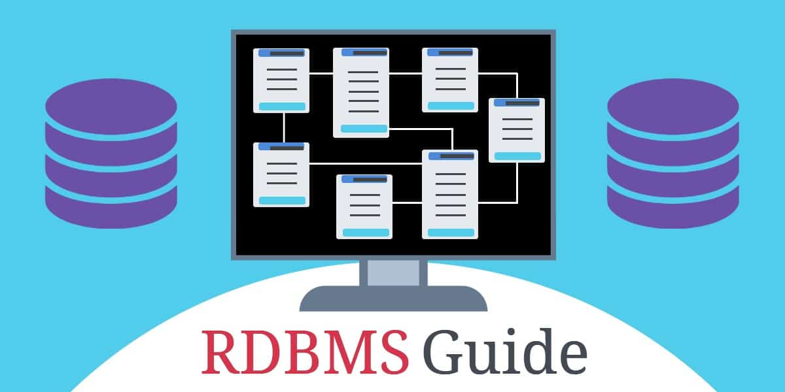

- AGOUA YAO ANGE ALEX
-

-

-

Selon leur construction et les possibilités qu'ils offrent, les SGBD peuvent être dit hiérarchiques, relationnels, orientés objet, objet-relationnels, XML/RDF ou mixtes. Ils peuvent être distribués, centralisés ou embarqués et peuvent être spatiaux. Ils se différencient également par la taille des bases de données qu'ils peuvent manipuler. Quelques uns des SGBD seront présentés ici, la totalité de la présentation peut être trouvée sur Wikipédia .

Selon ce modèle, les données sont placées dans des tables avec lignes et colonnes et n'importe quelle donnée contenue dans la base de données peut être retrouvée à l'aide du nom de la table, du nom de la colonne et de la clé primaire. Le modèle relationnel est destiné à assurer l'indépendance des données et à offrir les moyens de contrôler la cohérence et d'éviter la redondance. Il permet de manipuler les données comme des ensembles en effectuant des opérations de la théorie des ensembles. Les règles de cohérence qui s'appliquent aux bases de données relationnelles sont l'absence de redondance ou de nul des clés primaires, et l'intégrité référentielle.

Les applications informatiques telles que les systèmes d'information géographiques et les outils de conception assistée par ordinateur utilisent des SGBD de type spatial. Ce type de logiciel permet le stockage d'informations géométriques telles que des points, des lignes, des surfaces et des volumes. Ils comportent des fonctions permettant de retrouver une information sur la base de caractéristiques géométriques telles que les coordonnées ou la dimension. Le langage de requête du SGBD permet la manipulation d'informations de géométrie tels que lignes, points ou polygones ; le SGBD met en œuvre les algorithmes et les structures de fichiers nécessaires.